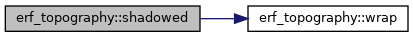
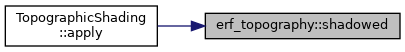
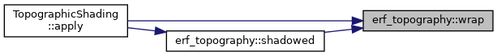

- Generated by
 1.9.1
1.9.1
|
ERF
Energy Research and Forecasting: An Atmospheric Modeling Code
|
Classes | |
| struct | Sun |
Functions | |
| AMREX_GPU_HOST_DEVICE AMREX_FORCE_INLINE Sun | sun_direction (double calday, double declin, Real lat_deg, Real lon_deg) |
| AMREX_GPU_HOST_DEVICE AMREX_FORCE_INLINE Real | incidence (Real hx, Real hy, Sun s) |
| AMREX_GPU_HOST_DEVICE AMREX_FORCE_INLINE int | wrap (int i, int lo, int n) |
| AMREX_GPU_HOST_DEVICE AMREX_FORCE_INLINE bool | shadowed (int i, int j, const amrex::Array4< const Real > &terrain, int ilo, int ihi, int jlo, int jhi, bool periodic_x, bool periodic_y, Real dx, Real dy, Sun s, Real search_length) |
| AMREX_GPU_HOST_DEVICE AMREX_FORCE_INLINE Real | corrected_shortwave (Real direct, Real diffuse, Real factor) |
| AMREX_GPU_HOST_DEVICE AMREX_FORCE_INLINE Real erf_topography::corrected_shortwave | ( | Real | direct, |
| Real | diffuse, | ||
| Real | factor | ||
| ) |
| AMREX_GPU_HOST_DEVICE AMREX_FORCE_INLINE bool erf_topography::shadowed | ( | int | i, |
| int | j, | ||
| const amrex::Array4< const Real > & | terrain, | ||
| int | ilo, | ||
| int | ihi, | ||
| int | jlo, | ||
| int | jhi, | ||
| bool | periodic_x, | ||
| bool | periodic_y, | ||
| Real | dx, | ||
| Real | dy, | ||
| Sun | s, | ||
| Real | search_length | ||
| ) |
Referenced by TopographicShading::apply().


| AMREX_GPU_HOST_DEVICE AMREX_FORCE_INLINE Sun erf_topography::sun_direction | ( | double | calday, |
| double | declin, | ||
| Real | lat_deg, | ||
| Real | lon_deg | ||
| ) |
| AMREX_GPU_HOST_DEVICE AMREX_FORCE_INLINE int erf_topography::wrap | ( | int | i, |
| int | lo, | ||
| int | n | ||
| ) |
Referenced by TopographicShading::apply(), TerrainIF::operator()(), ProblemBase::read_custom_terrain(), and shadowed().
